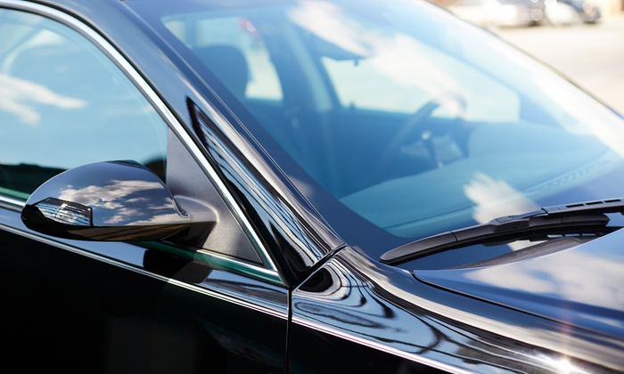
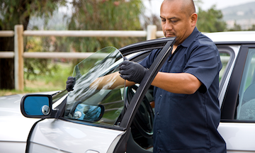

Mobile Auto Glass Repair in Hawthorne and more.
We provide mobile auto glass repair and replacement services in the city of Hawthrone and all surrounding area. Our techs come to your place to do the installation. Car glass replacement in Hawthorne area. Do you need a car glass replacement in Hawthorne area? We cover all Gardena area for mobile service.

Looking to get your windshield repair in Hawthorne, California area? We are here to provide a you a quick estimate over the phone and schedule your appointment for same day service. Talk to one of our auto glass specialist today. Car window repair in Hawthorne city area today. Get your quote and book it now.

Whether you need the driver side or passenger side window repaired, We can come to your place to install either one. We have most parts in stock, therefore we can offer you a same day mobile replacement.
We are locally base in the city of Gardena. We over all nearby cities such as Hawhtorne, Compton, Carson and more. We can hep with replacement of Windshields, Side windows, Back window and more.
Auto Glass Replacement and Windshield Replacement Services in Hawthorne California For more than 10 years, we have been providing exceptional auto glass replacement and windshield replacement services in Hawthorne, California. Our team of experts is dedicated to delivering top-notch services to our clients. We understand the importance of having a safe and functional car, which is why we specialize in providing auto glass replacement and windshield replacement services that not only meet, but exceed, customer expectations. Our Services We offer a wide range of auto glass replacement and windshield replacement services in the Hawthorne area. Our services include mobile auto glass, windshield replacement, mobile car glass, auto glass replacement, mobile windshield replacement, and car glass. We cater to all types of cars, ranging from individual cars to commercial fleets. Our services are top-quality, and our team of professionals is equipped with the skills and knowledge to handle any auto glass-related issue. Free Mobile Services We understand that our clients have busy schedules, which is why we offer free mobile services throughout the Hawthorne California area. Our fully equipped mobile units are designed to handle any auto glass-related issue. Whether you are at home, work, or on the road, our team of experts will come to your location and provide you with top-quality auto glass replacement and windshield replacement services. Our mobile services not only save you time but also ensure that your vehicle is safe to drive. Vacuum Shattered Glass Glass shattering in your car can be a dangerous and stressful experience. At our auto glass replacement and windshield replacement company, we take pride in our ability to vacuum shattered glass from your car. Our team of experts is equipped with the skills and equipment to remove shattered glass from your vehicle to ensure a clean and safe environment for you and your passengers. Safety Laminated Windshields and Tempered Glass Windows We understand that safety is paramount when it comes to auto glass replacement and windshield replacement. This is why we offer safety laminated windshields and tempered glass windows to our clients. Our company only works with premium quality glass and OEM equivalents to ensure that your car is equipped with safe and reliable auto glass. We adhere to all safety standards set by the industry to ensure that our clients remain safe on the road. Rain Sensing Windshields and Lane Departure Warning System Windshields In addition to our exceptional auto glass replacement and windshield replacement services, we specialize in rain-sensing windshields and lane departure warning system windshields. These technologies help to provide drivers with advanced warning and safety features in their vehicles. Our team of experts is equipped to install these specialized windshields into your car to enhance the safety features of your car. Conclusion At our auto glass replacement and windshield replacement company, we are committed to delivering exceptional services to our clients. Our services are designed to meet and exceed the expectations of our clients. With our free mobile services, premium quality glass, and adherence to safety standards, we remain the go-to auto glass replacement and windshield replacement company in the Hawthorne California area. Whether you need a windshield replacement or a simple auto glass repair, our team of professionals is available to provide you with top-quality services that ensure that you get back on the road safely and efficiently. Contact us today to schedule an appointment or to learn more about our services.
Give us a call — we're happy to answer any questions.
Call Now · (424) 240-8584